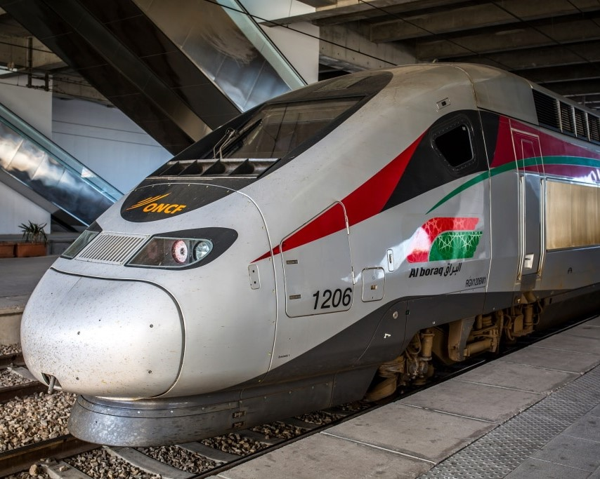
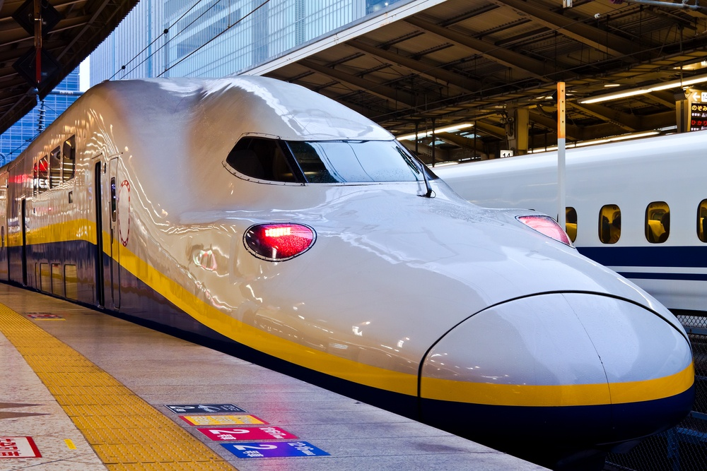
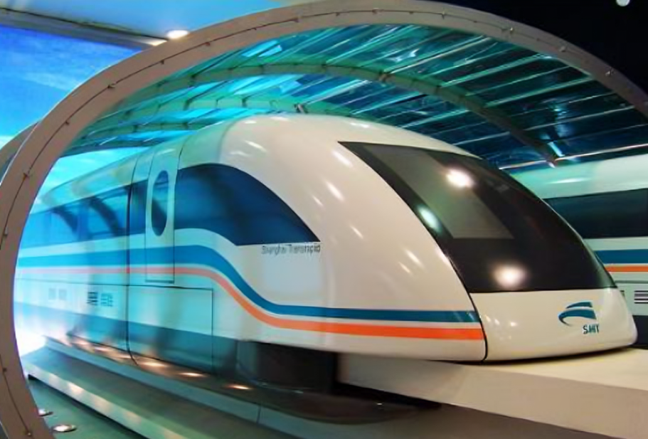
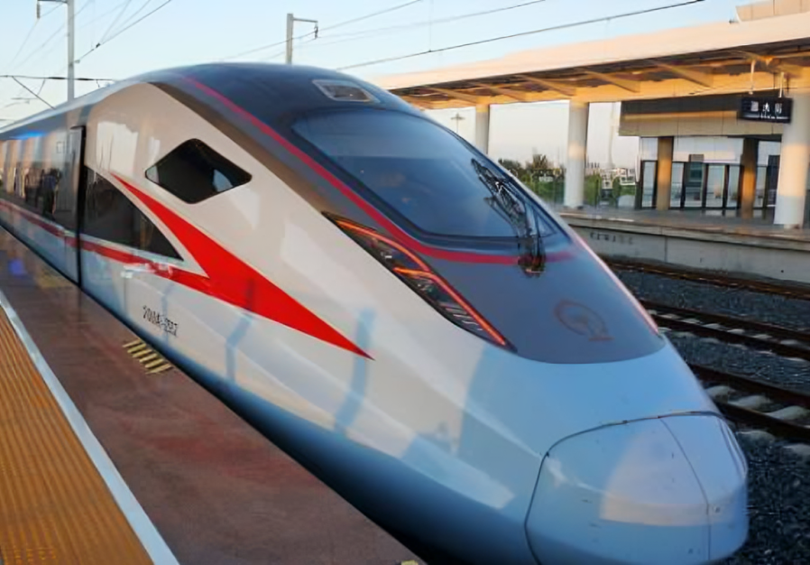
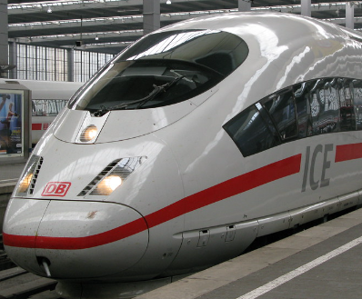
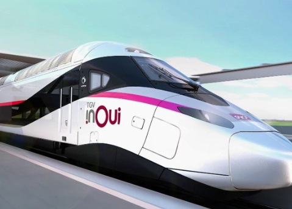

ONCF Al Boraq
Al Boraq е първият високоскоростен влак в Африка,
въведен в експлоатация в Мароко през 2018 г. Той
пътува със скорост от 320 км/ч и има максимална
скорост от 357 км/ч. Влакът свързва градовете
Танжер и Казабланка, намалявайки значително
времето за пътуване между тези важни
икономически центрове.
JR Shinkansen
Японският Shinkansen, известен още като "влак-стрела",
е легенда в света на високоскоростните влакове. Сегашната
генерация пътува със скорост от 320 км/ч и достига
максимална скорост от 443 км/ч. "Шинкансен" е въведен
за първи път през 1964 г. и оттогава непрекъснато се
усъвършенства. Известен е с изключителните си точност,
комфорт и безопасност.
Shanghai Maglev
Шанхайският Maglev е най-бързият комерсиален влак в света, пътуващ със скорост от 460 км/ч и достигащ максимална скорост от 501 км/ч. За разлика от конвенционалните влакове, маглевът използва магнитна левитация, което му позволява да достига изключително високи скорости. Влакът свързва международното летище на Шанхай с центъра на града.
Повече информацияCR Fuxing
Китайският Fuxing ("Възраждане") е един от най-бързите
конвенционални влакове в света, пътуващ със скорост от
350 км/ч и достигащ максимална скорост от 420 км/ч.
Въведен в експлоатация през 2017 г., Fuxing е изцяло
китайска разработка и представлява върхово постижение
в железопътната технология.
DB ICE
Немският InterCity Express (ICE) пътува със
скорост от 330 км/ч и има максимална скорост
от 368 км/ч. Последното поколение ICE 3neo,
въведено неотдавна, предлага още по-високо
ниво на комфорт и ефективност. ICE е гръбнакът
на германската железопътна мрежа.
SNCF TGV
Френският TGV (Train à Grande Vitesse) е един от пионерите в областта на високоскоростните влакове. Той пътува със скорост от 320 км/ч и държи световния рекорд за най-висока скорост на релси - 574,8 км/ч, постигнат през 2007 г. TGV свързва Париж с много европейски градове и предлага различни класове на обслужване.
Повече информация